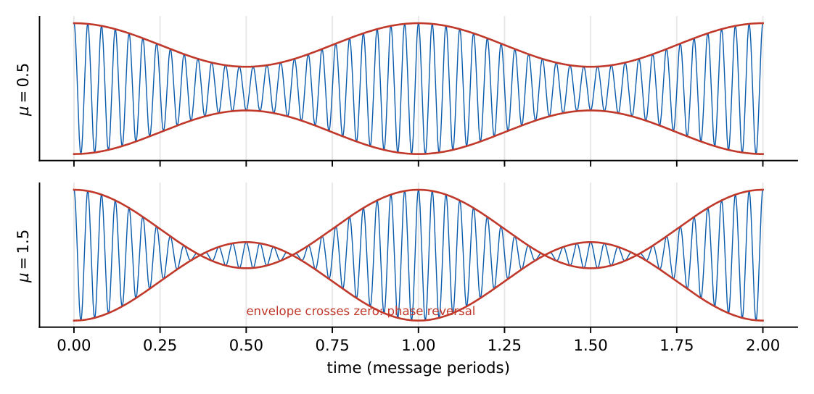
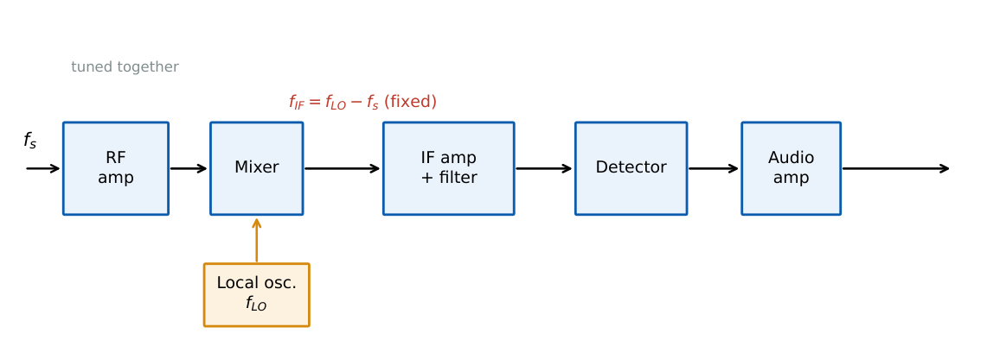

Amplitude Modulation and Receivers
In this chapter
AM spectrum, modulation index, total and sideband power, efficiency, DSB-SC/SSB/VSB bandwidths and powers, envelope and coherent demodulation, and the superheterodyne receiver (local oscillator and image frequency).
3.1 Conventional AM (DSB-FC)
The carrier amplitude follows the message: \(s(t)=A_c\,[1+k_am(t)]\cos2\pi f_ct\). The modulation index \(\mu=k_a\max|m(t)|\) (for a tone \(m=A_m\cos2\pi f_mt\): \(\mu=k_aA_m\)).

For \(\mu\le1\) the envelope \(A_c[1+k_am(t)]\) never goes negative, so an envelope detector recovers \(m(t)\). For \(\mu>1\) phase reversals occur and envelope detection distorts.
\(s(t)=A_c\cos\omega_ct+\dfrac{\mu A_c}2\cos(\omega_c+\omega_m)t+\dfrac{\mu A_c}2\cos(\omega_c-\omega_m)t\).
Bandwidth \(B_T=2f_m\) (for a message of bandwidth \(W\): \(2W\)).
Carrier power \(P_c=\dfrac{A_c^2}2\); sideband power (both) \(P_{SB}=\dfrac{\mu^2}{2}P_c\); total \(P_t=P_c\left(1+\dfrac{\mu^2}2\right)\).
Efficiency \(\eta=\dfrac{P_{SB}}{P_t}=\dfrac{\mu^2}{2+\mu^2}\); maximum \(33.3\%\) at \(\mu=1\).
Several tones: \(\mu_t=\sqrt{\mu_1^2+\mu_2^2+\cdots}\). For general \(m(t)\) with power \(P_m\) (and \(k_a\) s.t. \(|k_am|\le1\)): \(\eta=\dfrac{k_a^2P_m}{1+k_a^2P_m}\).
Antenna current: \(I_t=I_c\sqrt{1+\mu^2/2}\).
\(\mu=0.8\): \(P_t=1.32\,P_c\), sidebands carry \(0.32P_c\), \(\eta=24.2\%\).
\(P_t=1000\) W, \(\mu=0.5\): \(P_c=1000/1.125=889\) W; sidebands \(111\) W (\(55.6\) W each); \(\eta=11.1\%\).
Antenna current rises from \(10\) A (unmodulated) to \(11\) A: \(\left(\dfrac{11}{10}\right)^2=1+\dfrac{\mu^2}2\Rightarrow\mu=0.648\).
3.1.1 Demodulation of AM
- Envelope detector: diode plus RC. Requirements: \(\dfrac1{f_c}\ll RC\ll\dfrac1{W}\) (follow the carrier ripple but not the message), and to avoid diagonal clipping \(RC\le\dfrac{\sqrt{1-\mu^2}}{\mu\,\omega_m}\). Example: \(\mu=0.6\), \(f_m=5\) kHz: \(RC\le\dfrac{0.8}{0.6\times2\pi\times5000}=42.4\,\mu\)s.
- Square-law detector: output \(\propto s^2\), distortion unless \(\mu\) is small.
- Coherent (synchronous) detection: multiply by \(\cos\omega_ct\) and low-pass; works for all AM types.
Generation: square-law modulators, switching (chopper) modulators, collector modulation at high power.
3.2 DSB-SC
\(s(t)=A_cm(t)\cos\omega_ct\): no carrier, so all power goes to sidebands. \(B_T=2W\), \(P_t=\dfrac{A_c^2}2P_m\).
- Generation: balanced modulator (two AM modulators with opposite message polarity) or ring modulator (product).
- Demodulation: coherent; with local oscillator \(\cos(\omega_ct+\phi)\) the output is \(\tfrac12A_cm(t)\cos\phi\) (phase error attenuates, \(\phi=90^\circ\) gives zero), and a frequency error \(\Delta\omega\) gives \(m(t)\cos\Delta\omega t\) (beating). Carrier recovery by a Costas loop or squaring loop.
\(s(t)=10\cos(2\pi f_mt)\cos(2\pi f_ct)\): power \(=\tfrac12(10)^2\cdot\tfrac12=25\) W; the same message as SSB gives \(12.5\) W.
3.3 SSB and VSB
\(s(t)=\dfrac{A_c}2\left[m(t)\cos\omega_ct\mp\hat m(t)\sin\omega_ct\right]\) (\(-\) upper sideband, \(+\) lower), \(\hat m\) the Hilbert transform.
\(B_T=W\) (half of DSB-SC); \(P_t=\dfrac{A_c^2}4P_m\) (one sideband).
Generation: sideband filter (needs a sharp filter) or the phase-shift (Hartley) method; Weaver method avoids a wideband \(90^\circ\) shifter.
VSB: a vestige of one sideband is kept because messages with significant low-frequency content (TV video) make a sharp SSB filter impractical. \(W<B_T<2W\): \(B_T=W+f_v\). The filter must have odd symmetry about \(f_c\) so that coherent detection recovers \(m(t)\) without distortion.
| Scheme | Bandwidth | Carrier? | Detection | Use |
|---|---|---|---|---|
| AM (DSB-FC) | \(2W\) | yes | envelope | broadcast radio |
| DSB-SC | \(2W\) | no | coherent | stereo difference, subcarriers |
| SSB | \(W\) | no | coherent | voice (HF), FDM telephony |
| VSB | \(W+f_v\) | small (pilot) | envelope/coherent | TV video |
| QAM (quadrature) | \(2W\) for two messages | no | coherent (two paths) | colour TV chroma |
Quadrature-carrier multiplexing sends \(m_1\cos\omega_ct+m_2\sin\omega_ct\) in the same band; a phase error causes cross-talk.
3.4 Superheterodyne receiver

The received signal \(f_s\) is mixed with a local oscillator to a fixed intermediate frequency where selectivity and gain are provided.
\(f_{LO}=f_s+f_{IF}\) (high-side injection, the usual choice). Image frequency \(f_{si}=f_s+2f_{IF}\).
AM broadcast \(f_{IF}=455\) kHz, FM \(10.7\) MHz. The RF filter must reject the image: image rejection ratio \(\alpha=\sqrt{1+Q^2\rho^2}\), \(\rho=\dfrac{f_{si}}{f_s}-\dfrac{f_s}{f_{si}}\).
Tuning range \(f_{LO,max}/f_{LO,min}\) is smaller than the signal range for high-side injection (easier tracking).
Tuned to \(f_s=1000\) kHz with \(f_{IF}=455\) kHz: \(f_{LO}=1455\) kHz, image at \(1910\) kHz. With a tuned circuit \(Q=50\): \(\rho=1.91-0.524=1.386\), \(\alpha=\sqrt{1+(69.3)^2}\approx69\) (\(36.8\) dB).
Advantages: fixed IF filter gives uniform selectivity, high gain at a convenient frequency. Problems: image channel, IF breakthrough, LO radiation.
(i) \(P_t=P_c(1+\mu^2/2)\) applies to tone modulation; use \(1+k_a^2P_m\) otherwise. (ii) Efficiency of AM is at most \(33.3\%\) (tone) and the carrier carries no information. (iii) Image frequency is \(f_s+2f_{IF}\), not \(f_s+f_{IF}\). (iv) A phase error in coherent DSB-SC detection reduces the output by \(\cos\phi\); at \(90^\circ\) nothing is received. (v) SSB bandwidth equals \(W\), not \(2W\).
\(\mu=(A_{max}-A_{min})/(A_{max}+A_{min})\) from an oscilloscope envelope. Power in sidebands \(=P_t-P_c\). Receiver: draw the three frequencies \(f_s<f_{LO}<f_{si}\) spaced by \(f_{IF}\).
3.5 GATE problems
Q1. The maximum power efficiency of tone-modulated AM with \(\mu\le1\) is (A) 25% (B) 33.3% (C) 50% (D) 100%.
Q2. The bandwidth of an SSB signal for a message of bandwidth 5 kHz is (A) 2.5 kHz (B) 5 kHz (C) 10 kHz (D) 20 kHz.
Q3. For a superheterodyne receiver tuned to 1000 kHz with \(f_{IF}=455\) kHz and high-side injection, the image frequency is (A) 545 kHz (B) 1455 kHz (C) 1910 kHz (D) 2365 kHz.
Q4. Coherent detection of DSB-SC with a \(90^\circ\) phase error gives (A) full output (B) half output (C) zero output (D) double output.
Answers: Q1 (B). Q2 (B). Q3 (C). Q4 (C).
Q5. An AM transmitter with total power 1000 W and \(\mu=0.5\) has sideband power (A) 111 W (B) 125 W (C) 889 W (D) 500 W.
Q6. Antenna current rises from 10 A to 11 A on modulation. The modulation index is (A) 0.42 (B) 0.65 (C) 0.82 (D) 1.0.
Q7. An envelope detector for \(\mu=0.6\), \(f_m=5\) kHz must satisfy to avoid diagonal clipping \(RC\le\) (A) 42.4 \(\mu\)s (B) 4.24 \(\mu\)s (C) 424 \(\mu\)s (D) 0.1 ms.
Answers: Q5 (A). Q6 (B): \(\mu=\sqrt{2(1.21-1)}=0.648\). Q7 (A).
Q8. Efficiency (%, one decimal) of AM with \(\mu=0.8\) (single tone): .
Q9. Power (W) in \(s(t)=10\cos(2\pi f_mt)\cos(2\pi f_ct)\): .
Answers: Q8: \(\dfrac{0.64}{2.64}=24.2\). Q9: 25.
Q10. Select the true statements. (A) DSB-SC needs coherent detection. (B) AM with \(\mu>1\) can be envelope-detected without distortion. (C) SSB halves the bandwidth of DSB. (D) Image frequency lies \(2f_{IF}\) above \(f_s\) for high-side injection.
Answers: Q10: (A), (C), (D).
T1. \(P_t\) for \(\mu=1\) in terms of \(P_c\). T2. Why VSB for TV? T3. IF for FM broadcast.
Answers: T1: \(1.5P_c\). T2: video has large low-frequency content, SSB filter impractical. T3: 10.7 MHz.
- AM: \(P_t=P_c(1+\mu^2/2)\), \(\eta=\mu^2/(2+\mu^2)\), \(B=2W\), envelope detection needs \(\mu\le1\).
- DSB-SC: \(B=2W\), coherent, output \(\propto\cos\phi\). SSB: \(B=W\), \(P=A_c^2P_m/4\). VSB: \(W+f_v\).
- Superhet: \(f_{LO}=f_s+f_{IF}\), image \(f_s+2f_{IF}\), IF 455 kHz/10.7 MHz.